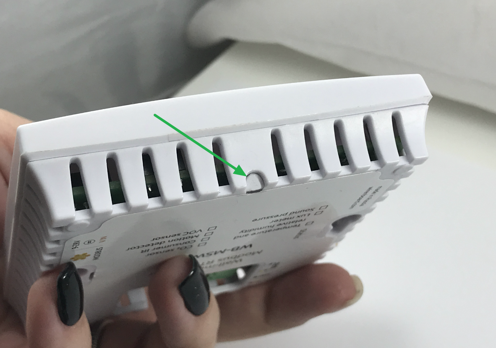

Product description
ZME_WB-MSW
WB-MSW-ZWAVE
Version 1.0
Z-Wave.Me Wall-mounted Multisensor it’s a Z-Wave Plus™ and RS-485 operating multisensor that contains temperature, humidity, light, motion, noise level, CO₂ concentration and volatile organic compounds (VOC) sensors. Built-in IR transceiver is designed to control the TV/AV and air conditioning.
The multisensor case is made of plastic and is not waterproof, designed for use in homes and offices. For wall mounting.
Supports operation via the Z-Wave radio protocol or via the two-wire RS-485 bus with Modbus RTU commands.
Measured value |
Range |
Error rate | Ready to work after power done |
|---|---|---|---|
Concentration CO₂ |
400 – 5000 ppm (parts per million) |
100 ppm + 5% from the measured value |
3 min, auto-calibration every 7 days |
Temperature |
−40 °С – +80 °С |
±0.3 °С (in range 0 – 70 °C) ±0.5 °С (in range−40 – 0 °C и 70 – 80 °C) |
1 sec, time constant (balancing with ambient air) ~4 min |
Humidity |
5 – 95 % |
±3 % |
1 sec |
Noise level (sound pressure) |
38 – 105 dB |
±2 dB (±3 dB int v.4.8) |
5 sec |
Illumination |
0,02 – 100 000 lx |
±10 % |
1 sec |
Air quality - VOC (volatile organic compounds) |
0 ppm – 60000 ppb (parts per million) for ethanol |
±15 % (typical) ±40 % (max) |
5 min (self-calibration after 12 hours) |
Motion sensor |
Up to 8 m, 120 degree |
|
8 sec |
Transmitting IR commands |
Up to 10 m (depends on the surrounding conditions) |
|
1 sec |
What is Z-Wave™ and Long Range?
The Z-Wave protocol is an open, interoperable, sub-GHz wireless communications technology designed specifically for control, monitoring and status reading applications in residential and light commercial environments. Z-Wave has two operating modes Z-Wave MESH which is a very reliable sub-GHz MESH and Long Range (US only) which operates in a STAR topology offering over a mile range.
This product can be operated in any Z-Wave network with other Z-Wave certified devices from other manufacturers.
Note: To add in Z-Wave Long Range mode, you can only use SmartStart.
Connection
The terminal block "V+ GND A B" with a 3.5 mm pitch is used to connect power and the RS-485 bus.
Power supply characteristics:
- Voltage: 9 V – 28 V DC
- Power: 4W
Wall mounting
For mounting with the possibility of easy removal use screws with a head diameter of about 7 mm, for permanent fixation use 9-10 mm.
The device must be operated under recommended environmental conditions.
We recommend placing the multisensors on warm (internal) walls, at a height of 1-1.6 m from the floor level, taking into account possible drafts and sun exposure.
When mounted on the ceiling in a living room, the temperature will be higher than in the room, and the humidity will be lower than in the room. The concentration of CO₂ does not depend on the height.
If the sensor is mounted on an external wall, then in the cold season the temperature sensor value will be several degrees lower than in the room.
After installing the multisensor, the CO₂ sensor will be automatically calibrated in the new environment. Full calibration takes 7 days.
Z-Wave Include (Add) / Exclude (Remove) process
Adding by Z-Wave button press
1. Power up the device and wait 2-3 minutes until the CO₂ sensor (channel 6) is calibrated. If you include before that, the CO₂ sensor will be missing.
2. Remove the top cover
|  |  |
|
|---|---|---|
| Locate the latch tab on the underside of the case | Press the latch until the ends with a screwdriver perpendicular to the side of the case | Lift the top cover |
3. Z-Wave include button is located on the board. Switch the controller to the "Inclusion" mode and press the button 3 times.
To exclude multisensor, switch the Z-Wave controller to the "Exclusion" mode and press Z-Wave button 3 times.

Adding using SmartStart
Wall-mounted Multisensor is a SmartStart enabled product. It can be added into a Z-Wave network by scanning the Z-Wave QR Code placed on the back cover.
- To use SmartStart your controller needs to support Security S2
- On the add device page scan the SmartStart QR-code or enter the full DSK string
- Power the multisensor
- Wait for the adding process to start (up to few minutes)
RS-485 or Z-Wave communication interfaces
Mode Switch is needed to select the communication interface.
| ON | Z-Wave (by default) |
| OFF | RS-485 Register Map |
Usage in Z-Wave network
Thanks to the many built-in sensors, the device can be used in different scenarios.
Motion sensor
Motion sensor can be used to control lighting and in security cases. Add the lighting device (bulb, led strip, relay, dimmer) to the association group 2 so that the sensor can control it. Parameters 64 - 67 are responsible for sending control commands when the motion sensor is triggered.
Temperature sensor
Temperature sensor can be used in a climate control scenario. In association group 3 add the wall plug that controls the heater. Parameters 68 - 73 allow you to adjust the temperature of turning on and off the heater.
Humidity sensor
Humidity sensor together with the temperature sensor can control the microclimate in the room. Add a humidifier to the association group 4. Parameters 74 - 79 allow you to adjust the humidity level of turning on and off the humidifier.
Luminance sensor
Luminance sensor together with the motion sensor can control lighting more intelligently. In association group 5 add a device that should turn on or off when the luminance level is exceeded. Parameters 80 - 85 allow you to control devices when the luminance level changes. Example scenario: Even if the motion sensor is triggered, but the natural luminance level is high, then the light can not be turned on.
CO₂ and VOC sensors
CO₂ and VOC sensors are designed for indoor air quality monitoring. If the values are exceeded, open the window or turn on the ventilation. In association groups 6 and 7 add a ventilation control device or a siren to alert about airing. Parameters 86 - 91 allow you to adjust the CO₂ level to enable ventilation, parameters 92 - 97 allow you to adjust the VOC level to enable ventilation.
Auto-calibration of the CO₂ sensor
Auto-calibration of the CO₂ sensor. The measured minimum value for 7 days is taken as 400 ppm — this is the value of the CO₂ concentration on the street. The CO₂ concentration will drop to street level if there are no people in the room for at least a few hours a day, or if exhaust ventilation is working in the room, or windows are sometimes opened in the room.
Safe levels of CO₂
| 250 - 400 ppm | Normal background concentration in outdoor ambient air |
| 400 - 1000 ppm | Concentrations typical of occupied indoor spaces with good air exchange |
| 1000 - 2000 ppm | Complaints of drowsiness and poor air. |
| 2000 - 5000 ppm | Headaches, sleepiness and stagnant, stale, stuffy air. Poor concentration, loss of attention, increased heart rate and slight nausea may also be present. |
| 5000 ppm | Workplace exposure limit (as 8-hour TWA) in most jurisdictions. |
| >40000 ppm | Exposure may lead to serious oxygen deprivation resulting in permanent brain damage, coma, even death. |
Noise sensor
Noise sensor measures the noise level in dB, can be used in public areas to monitor people's activity. In association group 8 add a device that should turn on or off when the noise level is exceeded. Parameters 98 - 103 allow you to control devices when the luminance level changes.
Intrusion detection
Intrusion detection is provided by a noise sensor. By default, if the noise level is above 80 dB, a alarm is sent to the controller. You can adjust the noise level in parameters 104, 105. Also the intrusion alarm can be used to turn on the light by clap :).
Hysteresis
When controlling the heating, temperature hysteresis is defined by a minimum and maximum temperature value, where the heat will be turned on and off respectively. For example, If the room temperature is to be maintained at 21°C with a hysteresis of 2°C, the heater will turn on when the temperature drops to 19°C and turn off when the temperature reaches 23°C.

Associations
Association - Direct control of other Z-Wave devices in case of exceeding the threshold of one of the sensors. Up to 5 devices can be placed in each of the 8 groups.
| Group # | Description |
|---|---|
| 1 | Lifeline - reports on all sensor values to the controller |
| 2 | Motion Basic On/Off - control devices when the motion sensor is triggered |
| 3 | Temperature Basic On/Off - control devices when the temperature changes (thermostat function) |
| 4 | Humidity Basic On/Off - control devices when humidity changes (hygrometer function) |
| 5 | Lumen Basic On/Off - control devices when the luminosity changes |
| 6 | CO₂ Basic On/Off - control devices when the CO₂ changes |
| 7 | VOC Basic On/Off - control devices when the VOC changes |
| 8 | Noise level Basic On/Off - control devices when the noise changes |
Configuration Parameters
Configuration parameters are used to configure the device for individual needs.
1. Debug mode
Enables Z-Uno debug mode.
| Value | 0 - 1 |
| Default | 0 |
| Size | 1 byte |
2. Activity LED
Turns on/off activity led.
| Value | 0 - 1 |
| Default | 1 |
| Size | 1 byte |
8. RF logging
Turns on/off exception logging. Used for Z-Uno SDK debugging. See Z-Uno description for more info
| Value | 0 - 1 |
| Default | 1 |
| Size | 1 byte |
9. Radio frequency (hidden parameter)
Changes Z-Wave region
| Value | 0 — Don't change the frequency, just reboot 256 — Load last selected frequency immediately 255 — EU 510 — RU 765 — IN 1020 — US 1275 — ANZ 1530 — HK 1785 — CN 2040 — JP 2295 — KR 2550 — IL 4590 — US Long Range |
| Default | 255 (EU) |
| Size | 2 bytes |
11. Multilevel report interval
Minimal report interval in seconds. Debugging mode is required.
Even if the temperature changes once per second, the report will come no more than once every 30 seconds (by default). This is protection from radio flood.
| Value | 0 - 255 |
| Default | 30 |
| Size | 1 byte |
20. OTA confirmation (hidden parameter)
Accepts firmware update process. Set 1 to accept.
| Value | 0 - 1 |
| Default | 0 |
| Size | 4 bytes |
64. Delay before cancellation of the motion alarm
The period of time after which the motion alarm will be canceled in the controller and association group 2. If a motion triggered during this time period, the timer starts again. Value in seconds.
| Value | 0 - 100000 |
| Default | 60 |
| Size | 4 bytes |
65. Motion ON command
Send Basic Set ON command to the association group 2.
| Value | 0 - 255 |
| Default | 255 |
| Size | 4 bytes |
66. Motion OFF command
Send Basic Set OFF command to the association group 2.
| Value | 0 - 255 |
| Default | 0 |
| Size | 4 bytes |
67. Motion ON/OFF commands rules
1 - Send ON if the motion is detected. Send OFF if the motion is idle.
2 - Send ON if the motion is detected. Do not send OFF.
3 - Do not send ON. Send OFF if the motion is idle.
Сommands are sent to the Group 2.
| Value | 0 - 3 |
| Default | 1 |
| Size | 4 bytes |
68. Temperature Report Threshold
0 - Reports disabled. Send Report to the controller if the temperature has changed after the last report by the specified value. Value in 0.01C° (100 = 1C°).
| Value | 0 - 4000 |
| Default | 100 (1 C°) |
| Size | 4 bytes |
69. Temperature Level to send Basic Set
Send Basic Set to the association group 3 if the temperature has crossed the level up or down + hysteresis. Value in 0.01C° (100 = 1C°).
| Value | -4000 — 8000 |
| Default | 4000 (40 C°) |
| Size | 4 bytes |
70. Temperature Hysteresis to send Basic Set
The range around a Temperature Level within which no commands are sent to the association group 3. Value in 0.01C° (100 = 1C°).
| Value | 10 — 2000 |
| Default | 100 (0.5 C°) |
| Size | 4 bytes |
71. Temperature ON command
Send Basic Set ON command to the association group 3.
| Value | 0 - 255 |
| Default | 255 |
| Size | 4 bytes |
72. Temperature OFF command
Send Basic Set OFF command to the association group 3.
| Value | 0 - 255 |
| Default | 0 |
| Size | 4 bytes |
73. Temperature ON/OFF commands rules
1 - Send ON if the temperature is greater than Level. Send OFF if the temperature is less than Level.
2 - Send ON if the temperature is greater than Level. Do not send OFF.
3 - Do not send ON. Send OFF if the temperature is less than Level.
Сommands are sent to the Group 3.
| Value | 1 - 3 |
| Default | 1 |
| Size | 4 bytes |
74. Humidity Report Threshold
0 - Reports disabled. Send Report to the controller if the humidity has changed after the last report by the specified value. Value in %.
| Value | 0 - 90 |
| Default | 5 |
| Size | 4 bytes |
75. Humidity Level to send Basic Set
Send Basic Set to the association group 4 if the humidity has crossed the level up or down + hysteresis. Value in %.
| Value | 5 - 95 |
| Default | 50 |
| Size | 4 bytes |
76. Humidity Hysteresis to send Basic Set
The range around a Humidity Level within which no commands are sent to the association group 4. Value in %.
| Value | 1 - 50 |
| Default | 2 |
| Size | 4 bytes |
77. Humidity ON command
Send Basic Set ON command to the association group 4.
| Value | 0 - 255 |
| Default | 255 |
| Size | 4 bytes |
78. Humidity OFF command
Send Basic Set OFF command to the association group 4.
| Value | 0 - 255 |
| Default | 0 |
| Size | 4 bytes |
79. Humidity ON/OFF commands rules
1 - Send ON if the humidity is greater than Level. Send OFF if the humidity is less than Level.
2 - Send ON if the humidity is greater than Level. Do not send OFF.
3 - Do not send ON. Send OFF if the humidity is less than Level.
Сommands are sent to the Group 4.
| Value | 1 - 3 |
| Default | 1 |
| Size | 4 bytes |
80. Luminance Report Threshold
0 - Reports disabled. Send Report to the controller if the luminance has changed after the last report by the specified value. Value in lux.
| Value | 0 - 100000 |
| Default | 100 |
| Size | 4 bytes |
81. Luminance Level to send Basic Set
Send Basic Set to the association group 5 if the luminance has crossed the level up or down + hysteresis. Value in lux.
| Value | 0 - 100000 |
| Default | 200 |
| Size | 4 bytes |
82. Luminance Hysteresis to send Basic Set
The range around a Luminance Level within which no commands are sent to the association group 5. Value in lux.
| Value | 1 - 50000 |
| Default | 50 |
| Size | 4 bytes |
83. Luminance ON command
Send Basic Set ON command to the association group 5.
| Value | 0 - 255 |
| Default | 255 |
| Size | 4 bytes |
84. Luminance OFF command
Send Basic Set OFF command to the association group 5.
| Value | 0 - 255 |
| Default | 0 |
| Size | 4 bytes |
85. Luminance ON/OFF commands rules
1 - Send ON if the luminance is greater than Level. Send OFF if the luminance is less than Level.
2 - Send ON if the luminance is greater than Level. Do not send OFF.
3 - Do not send ON. Send OFF if the luminance is less than Level.
Сommands are sent to the Group 5.
| Value | 1 - 3 |
| Default | 1 |
| Size | 4 bytes |
86. CO₂ Report Threshold
0 - Reports disabled. Send Report to the controller if the CO₂ has changed after the last report by the specified value. Value in ppm.
| Value | 0 - 5000 |
| Default | 100 |
| Size | 4 bytes |
87. CO₂ Level to send Basic Set
Send Basic Set to the association group 6 if the CO₂ has crossed the level up or down + hysteresis. Value in ppm.
| Value | 400 - 5000 |
| Default | 1500 |
| Size | 4 bytes |
88. CO₂ Hysteresis to send Basic Set
The range around a CO₂ Level within which no commands are sent to the association group 6. Value in ppm.
| Value | 1 - 2500 |
| Default | 50 |
| Size | 4 bytes |
89. CO₂ ON command
Send Basic Set ON command to the association group 6.
| Value | 0 - 255 |
| Default | 255 |
| Size | 4 bytes |
90. CO₂ OFF command
Send Basic Set OFF command to the association group 6.
| Value | 0 - 255 |
| Default | 0 |
| Size | 4 bytes |
91. CO₂ ON/OFF commands rules
1 - Send ON if the CO₂ is greater than Level. Send OFF if the CO₂ is less than Level.
2 - Send ON if the CO₂ is greater than Level. Do not send OFF.
3 - Do not send ON. Send OFF if the CO₂ is less than Level.
Сommands are sent to the Group 6.
| Value | 1 - 3 |
| Default | 1 |
| Size | 4 bytes |
92. VOC Report Threshold
0 - Reports disabled. Send Report to the controller if the VOC has changed after the last report by the specified value. Value in ppb.
| Value | 0 - 60000 |
| Default | 200 |
| Size | 4 bytes |
93. VOC Level to send Basic Set
Send Basic Set to the association group 7 if the VOC has crossed the level up or down + hysteresis. Value in ppb.
| Value | 0 - 60000 |
| Default | 660 |
| Size | 4 bytes |
94. VOC Hysteresis to send Basic Set
The range around a VOC Level within which no commands are sent to the association group 7. Value in ppb.
| Value | 0 - 30000 |
| Default | 200 |
| Size | 4 bytes |
95. VOC ON command
Send Basic Set ON command to the association group 7.
| Value | 0 - 255 |
| Default | 255 |
| Size | 4 bytes |
96. VOC OFF command
Send Basic Set OFF command to the association group 7.
| Value | 0 - 255 |
| Default | 0 |
| Size | 4 bytes |
97. VOC ON/OFF commands rules
1 - Send ON if the VOC is greater than Level. Send OFF if the VOC is less than Level.
2 - Send ON if the VOC is greater than Level. Do not send OFF.
3 - Do not send ON. Send OFF if the VOC is less than Level.
Сommands are sent to the Group 7.
| Value | 1 - 3 |
| Default | 1 |
| Size | 4 bytes |
98. Noise Report Threshold
0 - Reports disabled. Send Report to the controller if the noise has changed after the last report by the specified value. Value in dB.
| Value | 0 - 105 |
| Default | 10 |
| Size | 4 bytes |
99. Noise Level to send Basic Set
Send Basic Set to the association group 8 if the noise has crossed the level up or down + hysteresis. Value in dB.
| Value | 38 - 105 |
| Default | 80 |
| Size | 4 bytes |
100. Noise Hysteresis to send Basic Set
The range around a Noise Level within which no commands are sent to the association group 8. Value in dB.
| Value | 1 - 50 |
| Default | 5 |
| Size | 4 bytes |
101. Noise ON command
Send Basic Set ON command to the association group 8.
| Value | 0 - 255 |
| Default | 255 |
| Size | 4 bytes |
102. Noise OFF command
Send Basic Set OFF command to the association group 8.
| Value | 0 - 255 |
| Default | 0 |
| Size | 4 bytes |
103. Noise ON/OFF commands rules
1 - Send ON if the noise is greater than Level. Send OFF if the noise is less than Level.
2 - Send ON if the noise is greater than Level. Do not send OFF.
3 - Do not send ON. Send OFF if the noise is less than Level.
Сommands are sent to the Group 8.
| Value | 1 - 3 |
| Default | 1 |
| Size | 4 bytes |
104. Intrusion Noise Level
Send Alarm report to the controller if the noise level more then the specified value. Value in dB.
| Value | 38 - 105 |
| Default | 80 |
| Size | 4 bytes |
105. Delay before cancellation of the intrusion alarm
The period of time after which the intrusion alarm will be canceled in the controller. If the Noise Level becomes higher than the specified value during this time period, the timer starts again. Value in seconds.
| Value | 0 - 100000 |
| Default | 5 |
| Size | 4 bytes |
106. Motion LED
0 - LED flash OFF
255 - LED flash ON
The LED flashes red when motion is detected.
| Value | 0 - 255 |
| Default | 255 |
| Size | 4 bytes |
107. Operation mode LED
0 - LED flash OFF
255 - LED flash ON
The LED flashes green in operating mode.
| Value | 0 - 255 |
| Default | 255 |
| Size | 4 bytes |
Factory Reset
Hold the Z-Wave button until the red LED is blinking, release the Z-Wave button and then triple click on it. The red LED will confirm the reset process. Use this procedure only if your controller is missing or inoperable.
LEDs
Red blink: motion sensor triggered
You can control built-in LEDs (red, green, orange) using the Indicator Command Class, it can be used to identify specific node in network.
Buzzer control
You can control the built-in buzzer using the Sound Switch Command Class. Available 2 audio alerts.
- constant beep
- intermittent beep
Notification Command Class
Version: 8
Notification Type: Home Security (0x07)
| Channel | Event / State | State variable | State var. after [State idle] Notification | Notification name | Value |
|---|---|---|---|---|---|
| 0,1 | State | Motion sensor status | Idle | Motion detection | 8 |
| 2 | State | Sensor status | Idle | Intrusion | 2 |
Sensor Multilevel Command Class
Version: 11
| Channel | Sensor Type | Scale | Precision | Size |
|---|---|---|---|---|
| 3 | Temperature | °C | 2 | 2 |
| 4 | Humidity | % | 2 | 2 |
| 5 | Luminiscence | Lux | 2 | 4 |
| 6 | CO₂ Level | PPM | 0 | 2 |
| 7 | Volatile Organic Compound (VOC) | mol/m³ | 0 | 2 |
| 8 | Loudness | Absolute loudness (dB) | 2 | 2 |
Security
Version: 1
Multisensor supports four Z-Wave security levels
- Non-secure
- S0
- S2 Unauthenticated
- S2 Authenticated
Basic Command
Version: 1
The Basic Set command is mapped on the Sound Switch Tone Play Set command on Channel 9.| Basic Command | Mapped Command | Parameters |
|---|---|---|
| Basic Set | Sound Switch Tone Play Set | Value → Tone Identifier |
| Basic Report | Sound Switch Tone Play Report | Current Value → Tone Identifier |
Command Classes Versions
| Command Class | Version | Security |
|---|---|---|
| Application Status | 1 | Unsecure and secure |
| Association | 3 | Highest security level |
| Association Group Information | 3 | Highest security level |
| Basic | 2 | Highest security level |
| Configuration | 4 | Highest security level |
| Device Reset Locally | 1 | Highest security level |
| Firmware Update | 5 | Highest security level |
| Indicator | 4 | Highest security level |
| Manufacturer Specific | 2 | Highest security level |
| Multi Channel | 4 | Highest security level |
| Multi Channel Association | 4 | Highest security level |
| Multilevel Sensor | 11 | Highest security level |
| Notification | 8 | Highest security level |
| Power Level | 1 | Highest security level |
| Security S0 | 1 | Securitity transport |
| Security S2 | 1 | Securitity transport |
| Sound Switch | 2 | Highest security level |
| Supervision | 2 | Unsecure and secure |
| Transport Service | 2 | Unsecure and secure |
| Version | 3 | Highest security level |
| Z-Wave Plus Information | 2 | Unsecure and secure |
Technical specifications
| Voltage | 9 V – 28 V DC |
| Power | 4W |
| Operating temperature | -10°C … +50°C |
| Operating humidity | Up to 95%, without condensation of moisture |
| Dimensions | 83x83x21 mm |
| Weight | 90 g (with box) |
| Communication interfaces |
Z-Wave Plus (wireless) RS-485 (wired) |
| Z-Wave frequency |
(865...869 MHz): Europe (EU), India (IN), Russia (RU), China (CN), South Africa (EU), Middle East (EU) (908...917 MHz): America, excluding Brazil and Peru (US), Israel (IL) (919...921 MHz): Australia / New Zealand / Brazil / Peru (ANZ), Hong Kong (HK), Japan (JP), Taiwan (TW), Korea (KR) |